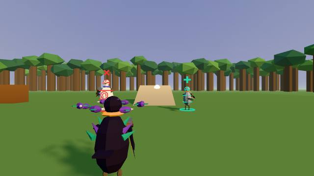
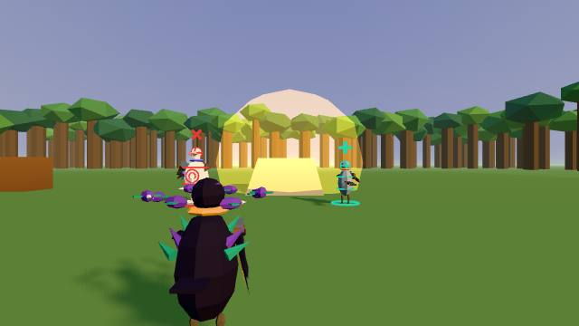
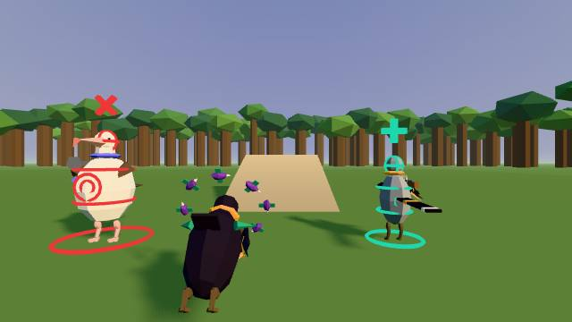

Starling Playable
Song burst · Playable since Stage 3
Appearance: small and spiky (ruffled shoulder feathers), always circled by a halo of 8 tiny starlings orbiting at head height; short square tail. Iridescent black with green-purple sheen and white speckles. Reads as "small bird inside a ring of specks".
How to play
Song-burst birds deal their damage through abilities. Spend Seeds on the Song column, line up your abilities so they land together, and keep your cooldowns rolling rather than hoarding them.
Starling fights with the Chatter Pistol, which fires travelling projectiles you have to lead and spreads 2 pellets per shot. Damage drops off between 12 m and 30 m, and head hits are beak shots worth ×1.65. Every level above 1 is a Molt: +32 max HP per level; +3% gun damage of base per level; +1 Song power per level; +3 melee damage per level.
Fire Murmuration down a lane to hit a whole group. Scatter turns you into a swarm that cannot be shot, which makes it a fine escape and an even better entrance.
Abilities
Four abilities. Slots 1 to 3 unlock at level 1, the ultimate at level 6. Each can be upgraded three times, for 1, 2, 5 AP, in order; see Ability Points. The shortest cooldown in the kit is Murmuration at 11 s.

1. Murmuration
Send a swarm 30 m at 40 m/s, 2 m wide, through everything: 110 + 1.1×SP Song damage to each enemy it passes.
- Tier 1 · 1 AP+40 damage (150 + 1.1×SP) damage +40
- Tier 2 · 2 AP-3 s cooldown cooldown -3 s
- Tier 3 · 5 AP2 charges +1 charge

2. Mob
Drop a swarm cloud within 25 m: 5 m radius, 4 s. Enemies inside take 35 + 0.35×SP Song damage a second, are slowed 20% and are revealed.
- Tier 1 · 1 APLasts +2 s (6 s) duration +2
- Tier 2 · 2 APRadius +1.5 m (6.5 m) radius +1.5
- Tier 3 · 5 APEnemies inside also suffer 50% heal reduction heal r +6.5

3. Scatter
Become a swarm for 1 s: intangible, travelling 12 m along your movement keys (forward if none), then reform. Casting removes slows and roots.
- Tier 1 · 1 AP-4 s cooldown cooldown -4 s
- Tier 2 · 2 APTravels +6 m (18 m) range +6 m, dist +6
- Tier 3 · 5 APReforming deals 80 + 0.8×SP Song damage to enemies within 4 m burst r +4
4. Black Sun
After a 0.75 s windup (rooted), a swarm sphere of 10 m radius follows you for 3 s: enemies inside take 100 + 0.9×SP Song damage a second and +15% Song damage from all sources.
- Tier 1 · 1 APRadius +3 m (13 m) range +3 m, radius +3
- Tier 2 · 2 APLasts +1 s (4 s) duration +1
- Tier 3 · 5 APThe windup ends with a burst: 150 + 1.2×SP Song damage and a 1 s silence in the radius burst r +13
Since Stage 3. See all heroes.